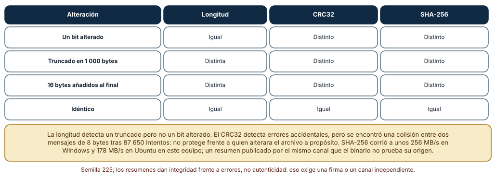
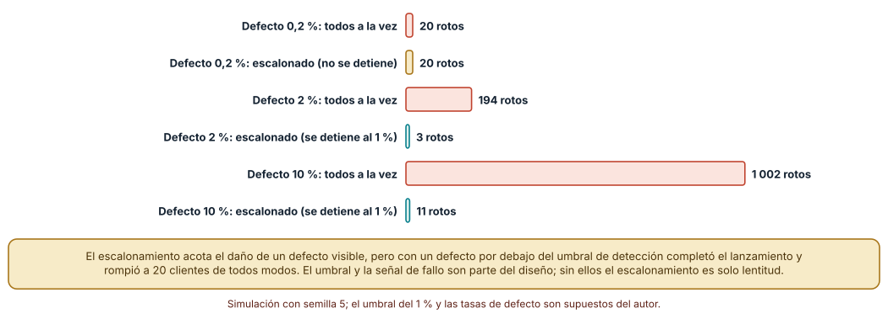
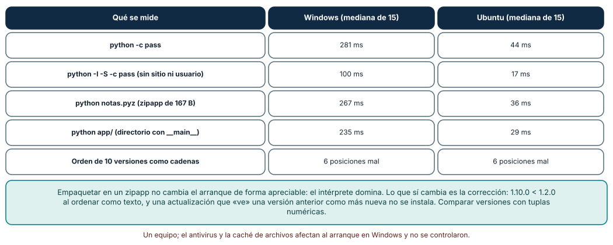

← SE-224 — Automatización idempotente y reanudable · ↑ Parte 18 · 📚 Índice completo · 🌐 Portal · SE-226 — Telemetría opt-in y privacidad en herramientas →
Punto profesional y fundamento pedagógico
Punto profesional. La clase existe para entregar una herramienta a otras personas y actualizarla de modo que cada copia sea la esperada, un lanzamiento defectuoso dañe a pocos antes de detenerse, las versiones se ordenen con criterio y exista siempre un camino de vuelta.
Por qué aparece aquí. Se sitúa después de Automatización idempotente y reanudable (SE-224) y antes de Telemetría opt-in y privacidad en herramientas (SE-226): SE-224 dejó la técnica de descargar a un temporal, verificar y reemplazar; esta clase la aplica a un binario y a su cadena de entrega, y deja la señal de «un lanzamiento está funcionando mal» que SE-226 pregunta cómo obtener sin vigilar a las personas.
Error conceptual que debe corregir. Creer que publicar un archivo y un hash al lado es «distribución segura» y que una actualización es «bajar el nuevo y copiarlo». Un hash publicado por el mismo canal que el archivo prueba integridad frente a errores, no origen; una actualización a todos a la vez convierte cualquier defecto en una incidencia total.
Secuencia de aprendizaje. Antes de leer la solución, predices qué alteraciones detectan la longitud, un CRC y SHA-256, cuántos clientes rompe un lanzamiento defectuoso con y sin escalones y qué versiones se ordenan mal como texto; después lo mides. La secuencia usa predicción, explicación propia, contraste y recuperación. ICAP distingue participación de construcción de conocimiento; How People Learn II exige conectar conocimiento previo, contexto y transferencia; la práctica de recuperación respalda producir de nuevo la explicación tras una demora; y Education for Life and Work exige devolución que explique la causa del error.
Evidencia de aprendizaje. release-log.md con la política de entrega de notas (integridad, origen, versionado, escalonamiento, reversión), las tres mediciones (alteraciones detectadas, daño de un lanzamiento defectuoso, arranque y orden de versiones) y el plan de reversión. Debe contener predicción previa, observación, explicación causal, contraejemplo y qué hallazgo haría detener un lanzamiento.
Límite de la conclusión. El archivo es de 20 MB generado con una semilla; los clientes, las tasas de defecto y el umbral del 1 % son supuestos del autor; la velocidad de resumen es de un equipo; no se firmó ni se verificó ninguna firma real, no se usó un marco de actualización (TUF) ni se midió una red.
Trazabilidad fuente → afirmación
| Fuente primaria u oficial | Afirmación que respalda | Lo que no prueba |
|---|---|---|
| NIST FIPS 180-4: Secure Hash Standard | Especifica SHA-256 y SHA-512 como funciones hash aprobadas. | No dice cómo distribuir el valor hash de forma confiable. |
| Semantic Versioning 2.0.0 | Define el orden de versiones por componentes numéricos y las reglas de precedencia con sufijos. | No decide cuándo un cambio es «mayor». |
| The Update Framework (TUF) | Describe amenazas a los sistemas de actualización y un diseño con metadatos firmados. | No es una implementación para esta herramienta. |
| SLSA | Define niveles de seguridad de la cadena de suministro de artefactos. | No certifica una herramienta concreta. |
Python: zipapp | Documenta cómo empaquetar una aplicación Python en un archivo ejecutable. | No resuelve las dependencias con extensiones compiladas. |
Antes de empezar
Recupera lo aprendido en SE-224: se descarga a un temporal, se verifica y se reemplaza de forma atómica. La pregunta activa es: ¿qué verifico antes de reemplazar y cuánto daño hago si me equivoco?
Prerrequisitos
- Haber completado
SE-224o poder explicar la escritura atómica. - Python 3.11 o posterior; el módulo
zipappyhashlibde la biblioteca estándar. - Trabajar con un archivo sintético, sin descargar nada real.
Problema auténtico
El equipo distribuye notas como un archivo notas.pyz en una carpeta compartida y publica su SHA-256 en el mismo lugar. Un lanzamiento llega truncado a un tercio de las estaciones por una copia interrumpida, y el script de actualización, que solo comprueba que el archivo existe, lo instala. Otro lanzamiento tiene un defecto en una ruta con espacios y se despliega a todas las estaciones el viernes por la tarde. Y la herramienta de auto-actualización considera que 1.9.0 es posterior a 1.10.0.
Objetivos observables
Al terminar podrás:
- elegir qué comprobar antes de instalar (longitud, resumen, firma) y entender qué prueba cada una;
- diseñar un despliegue escalonado con umbral de detención y estimar el daño con y sin escalones;
- ordenar versiones con criterio y evitar que una actualización instale una versión anterior;
- empaquetar una aplicación Python en un solo archivo y medir su arranque;
- escribir un plan de reversión con la versión anterior conservada.
Mapa conceptual
Ver la notación fuente del diagrama
flowchart LR
B[Compilación] --> A[Artefacto]
A --> H[Resumen y firma]
A --> C[Canal de entrega]
C --> D[Descarga a temporal]
D --> V{¿Verifica?}
V -->|sí| R[Reemplazo atómico]
V -->|no| X[Rechazo y aviso]
R --> E[Escalón de despliegue]
E -->|falla| U[Reversión]El mapa se lee de izquierda a derecha: el artefacto lleva resumen y firma por un canal; el cliente descarga a un temporal, verifica y reemplaza; el despliegue avanza por escalones y puede revertirse. No describe un sistema de actualización concreto.
Temas y por qué importan
| Tema | Por qué cambia una decisión profesional | Evidencia mínima |
|---|---|---|
| Integridad | Detecta archivos truncados o alterados antes de instalarlos. | Predicción, traza causal y contraejemplo de Integridad en release-log.md |
| Origen y firma | Un resumen por el mismo canal no prueba quién publicó. | Predicción, traza causal y contraejemplo de Origen en release-log.md |
| Versionado | Ordenar mal las versiones instala una anterior. | Predicción, traza causal y contraejemplo de Versionado en release-log.md |
| Despliegue escalonado | Limita el daño de un defecto antes de detectarlo. | Predicción, traza causal y contraejemplo de Escalones en release-log.md |
| Reversión | Sin versión anterior, una actualización mala es irreversible. | Predicción, traza causal y contraejemplo de Reversión en release-log.md |
Conceptos y decisiones
1. El artefacto y lo que lo acompaña
Distribuir es entregar un artefacto (un archivo .pyz, un ejecutable, un paquete) y metadatos: versión, resumen criptográfico, firma, notas del cambio y versión mínima compatible. Una herramienta en Python puede empaquetarse como un zipapp (un archivo zip ejecutable con python archivo.pyz), que simplifica la entrega pero no incluye el intérprete ni las dependencias con extensiones compiladas. Un binario autónomo (empaquetado con un congelador) resuelve eso a cambio de tamaño y de proceso de compilación por sistema. La decisión es qué se entrega y qué se supone instalado.
2. Integridad, origen y por qué no son lo mismo
Un resumen criptográfico (SHA-256) cambia si cambia un solo bit: detecta truncados, corrupciones y alteraciones. Pero si el resumen se publica por el mismo canal que el archivo, quien pueda alterar uno puede alterar el otro: la integridad no prueba el origen. Para eso hace falta una firma con una clave cuyo propietario es quien publica y cuya clave pública el cliente ya conoce por otro camino. Un CRC32, aunque detecta errores accidentales, tiene 32 bits: es fácil construir dos mensajes con el mismo valor y no protege frente a una alteración deliberada. La longitud sola detecta truncados, no cambios de contenido.
3. Versionar para que el orden sea el correcto
El versionado semántico ordena por componentes numéricos (mayor, menor, parche) y trata los sufijos de preliminar (-rc1) como anteriores a la versión final. Ordenar como texto da 1.10.0 < 1.2.0, porque compara carácter a carácter. Un cliente que decide «hay actualización» comparando cadenas puede ofrecer una versión anterior como nueva o negar una real. La regla: parsear a tuplas numéricas, comparar tuplas y tratar un formato desconocido como error, no como «igual».
4. Escalonar: dañar a pocos primero
Un despliegue por escalones (1 %, 5 %, 25 %, 100 %) entrega la versión a una fracción, observa una señal de salud y solo avanza si se mantiene bajo un umbral. Limita el daño de un defecto visible al tamaño del primer escalón. No ayuda con un defecto por debajo del umbral de detección, con uno que tarda en manifestarse ni con una señal que no existe: sin telemetría o sin un canal de informes, no hay umbral que vigilar (SE-226). El diseño debe decir qué es «salud», quién la mide y quién decide avanzar o parar.
5. Revertir es parte de la actualización
Cada actualización debe conservar la versión anterior y un camino documentado para volver: el nuevo se instala junto al viejo y se cambia un enlace o un nombre con un reemplazo atómico; si el arranque posterior falla, el cargador vuelve al anterior. Una reversión que depende de volver a descargar la versión vieja falla justo cuando la red o el servidor fallan. Los datos también cuentan: una versión que migra el formato de los datos no se revierte con solo cambiar el binario; las migraciones necesitan compatibilidad hacia atrás durante una ventana.
Qué detecta cada comprobación
Un archivo sintético de 20 MB (semilla 225) se alteró de tres maneras. Un bit alterado: la longitud no cambió; CRC32, MD5 y SHA-256 sí cambiaron. Truncado en 1 000 bytes: cambiaron la longitud y los tres resúmenes. 16 bytes añadidos al final: cambiaron la longitud y los tres resúmenes. Un archivo idéntico coincidió en todo. Con una búsqueda por cumpleaños, se encontró una colisión de CRC32 entre dos mensajes de 8 bytes tras 87 650 intentos. SHA-256 procesó unos 256 MB/s en Windows y 178 MB/s en Ubuntu en este equipo, CRC32 unos 890 y 1 415 MB/s.
h = hashlib.sha256()
with open(ruta, "rb") as f:
for bloque in iter(lambda: f.read(1 << 20), b""):
h.update(bloque)
assert h.hexdigest() == esperado
Cómo leer la figura. Cada fila es una alteración; las columnas dicen si la comprobación la detecta. Dónde deja de valer: las alteraciones son accidentales; frente a un atacante que controla el canal, ningún resumen publicado junto al archivo basta, y la colisión de CRC32 solo ilustra que 32 bits son pocos. No se midió MD5 ni SHA-1 contra colisiones construidas.
Un lanzamiento defectuoso en 10 000 clientes
Simulación con semilla 5: cada cliente que recibe la versión defectuosa se rompe con una probabilidad dada, y el despliegue escalonado (1 %, 5 %, 25 %, 100 %) se detiene si falla más del 1 % de los actualizados en un escalón. Defecto de 0,2 %: lanzar a todos rompió 20 clientes; el escalonado no se detuvo y rompió los mismos 20. Defecto de 2 %: a todos, 194; escalonado, 3, detenido en el escalón del 1 %. Defecto de 10 %: a todos, 1 002; escalonado, 11, detenido en el 1 %.

Cómo leer la figura. Cada par de barras compara el mismo defecto con y sin escalones; la teal marca cuando el escalonamiento detuvo el lanzamiento. Dónde deja de valer: el umbral del 1 % y las tasas de defecto son supuestos; en un caso real la señal llega con retraso y con ruido, y una parte de los clientes no informa. El escalonamiento acota los daños que se ven; los que no se ven los hereda el 100 %.
Arrancar, empaquetar y ordenar versiones
El arranque mínimo de Python (python -c pass) tardó una mediana de 281 ms en Windows y 44 ms en Ubuntu; python -I -S -c pass (sin sitio ni usuario), 100 ms y 17 ms; un zipapp de 167 bytes, 267 y 36 ms; el mismo programa como directorio con __main__.py, 235 y 29 ms. Diez versiones (0.9.5, 1.0.0, 1.2.0, 1.2.9, 1.2.10, 1.9.0, 1.10.0, 2.0.0-rc1, 2.0.0, 10.0.0) se ordenaron como cadenas y como tuplas: seis posiciones difirieron; como texto, 1.10.0 quedó antes que 1.2.0 y 10.0.0 antes que 2.0.0-rc1.

Cómo leer la figura. Las cuatro primeras filas son medianas de 15 arranques; la última cuenta posiciones distintas entre el orden de texto y el semántico. Dónde deja de valer: el arranque en Windows incluye el efecto de antivirus y de la caché de archivos, que no se controlaron; un binario congelado arranca de otra forma. El orden de versiones no depende del equipo, solo de si se parsean.
Definiciones de trabajo
- artefacto: archivo producido por la compilación o el empaquetado que se entrega a los usuarios.
- resumen criptográfico (hash): valor de longitud fija que cambia si cambia cualquier bit del contenido.
- firma digital: prueba, con una clave privada, de que el publicador es quien dice ser y de que el contenido no cambió.
- despliegue escalonado: entrega a fracciones crecientes de usuarios con una señal de salud entre cada una.
- reversión (rollback): vuelta a la versión anterior tras detectar un defecto.
Las definiciones son operativas para la herramienta notas. No convierten términos con historia más amplia en sinónimos y deben contrastarse con la documentación primaria enlazada al final.
Ejemplo mínimo
El fragmento compara versiones como texto y como tuplas. Antes de ejecutarlo, predice cuál es mayor en cada caso.
def clave(v):
base, _, pre = v.partition("-")
return (tuple(int(x) for x in base.split(".")), 0 if pre else 1)
print("1.10.0" > "1.9.0", clave("1.10.0") > clave("1.9.0"))
print(sorted(["2.0.0", "2.0.0-rc1", "1.10.0", "1.2.0"], key=clave))La comparación de texto da False y la de tuplas True. Añade un formato desconocido ("1.x") y decide si debe lanzar un error; registra versión y salida.
Ejemplo profesional
La entrega de notas publica, para cada versión, un notas-X.Y.Z.pyz, un SHA256SUMS y su firma en un canal independiente. El cliente que se actualiza descarga a un temporal en el mismo directorio, comprueba la longitud, el SHA-256 contra una lista firmada y la compatibilidad mínima, y solo entonces reemplaza de forma atómica el archivo activo, conservando el anterior como notas.anterior.pyz. La versión se compara con tuplas y un formato desconocido es un error. El despliegue avanza por escalones de 1, 5, 25 y 100 %, con una pausa de 24 horas y una condición de detención (más de 1 % de arranques fallidos informados, o cualquier fallo de integridad). Una prueba simula un archivo truncado, uno con un bit alterado y una versión anterior publicada como nueva, y exige que ninguno se instale.
Compara el caso normal con una descarga cortada, un resumen que no coincide y un arranque fallido tras actualizar. La entrega es apropiada cuando los tres terminan con la versión anterior en uso y un aviso; es peligrosa cuando la única protección es que el archivo exista.
Práctica guiada
- Escribe el contrato de entrega de
notas: qué se publica, cómo se verifica y qué versión mínima requiere. - Genera un archivo sintético, altéralo de tres maneras y mide qué detectan la longitud, el CRC32 y el SHA-256.
- Empaqueta un programa con
zipappy mide el arranque frente a un directorio. - Compara el orden de diez versiones como texto y como tuplas.
- Simula 10 000 clientes con tres tasas de defecto, con y sin escalones.
- Diseña la reversión: dónde queda la versión anterior y quién decide volver.
- Pide a otra persona que reconstruya la política solo desde
release-log.md.
Ejercicios
- Umbral: con un defecto de 0,2 %, ¿qué umbral o qué tamaño de escalón habría detenido el lanzamiento? Calcula el coste en tiempo de un escalón más pequeño.
- Lista firmada: diseña qué contiene
SHA256SUMSy qué debe verificar el cliente antes de usarlo; explica por qué no basta con comprobar un hash. - Versión mínima: una actualización cambia el formato de los datos; define la ventana de compatibilidad y cómo se revierte sin perderlos.
- Arranque: decide si el coste de 281 ms de arranque en Windows justifica un binario congelado para una herramienta de uso interactivo y para una de uso en lote.
Reto verificable
Entrega release-log.md con el contrato de entrega, la tabla de integridad, la simulación de escalones con su semilla (5) y la comparación de versiones. Se aprueba si otra persona ejecuta el código desde un checkout limpio, obtiene las mismas cifras (20, 194 y 3, 1 002 y 11; seis posiciones distintas) y puede señalar qué lanzamiento no habría detenido el escalonamiento. No se aprueba por publicar un hash junto al archivo ni por «probar en un solo equipo».
Caso conductor
La herramienta notas es el caso conductor de la Parte 18. Esta clase deja su contrato de entrega: artefacto con resumen y firma, verificación antes de reemplazar, orden de versiones correcto, escalones con umbral y reversión. SE-226 pregunta cómo obtener la señal de salud sin vigilar a las personas. Cambia después un solo detalle, el umbral de detención de 1 % a 5 %, y mide cuántos clientes más se rompen con cada tasa de defecto.
Preguntas frecuentes
¿Basta con publicar el hash junto al archivo?
Protege contra descargas corruptas, no contra quien pueda reemplazar ambos. Para probar el origen hace falta una firma y una clave pública conocida por otro camino, o un canal de distribución con autenticación fuerte.
¿Por qué no usar MD5 o CRC32 para integridad?
CRC32 es adecuado para detectar errores de transmisión, no alteraciones deliberadas; MD5 tiene colisiones construidas. Para distribución se usa SHA-256 o superior. La velocidad medida (256 MB/s) no es un obstáculo para un archivo de decenas de megabytes.
¿El escalonamiento sustituye a las pruebas?
No: limita el daño de lo que las pruebas no vieron. Un defecto que se manifiesta tarde o en un caso raro puede pasar todos los escalones.
¿Qué hago si la versión nueva migra datos?
Mantén compatibilidad hacia atrás durante una ventana: la versión nueva lee y escribe un formato que la anterior aún entiende, y la migración definitiva se aplica en un lanzamiento posterior.
Fallo controlado y diagnóstico
Reproduce el fallo clásico de la clase: instalar un archivo truncado porque solo se comprobó que existía. Usa el archivo sintético truncado en 1 000 bytes.
Registra síntoma, entrada mínima, hipótesis, observación que descarta cada hipótesis, causa, corrección y prueba de regresión. Síntoma: tras la actualización, notas falla al arrancar con un error de archivo zip. Hipótesis rivales: (a) el intérprete de la estación es incompatible; (b) el archivo se corrompió en disco; (c) la descarga se cortó y se instaló igual. Prueba: la longitud del archivo instalado es menor que la publicada y su SHA-256 no coincide con la lista. Conclusión: la causa es la tercera. Regresión: descargar a un temporal, comprobar longitud y resumen, y reemplazar solo si coinciden, conservando el archivo anterior; añadir una prueba con un archivo truncado. No cambies a la vez el formato del paquete y la verificación.
Errores comunes y cómo corregirlos
| Síntoma | Causa probable | Corrección |
|---|---|---|
| Se instala un archivo truncado | Solo se comprobó su existencia | Descarga a temporal, longitud y SHA-256 antes de reemplazar |
| Alguien sustituyó el archivo y su hash | El hash viaja por el mismo canal | Firma con clave pública conocida por otro camino |
| La actualización instala una versión anterior | Se comparan versiones como texto | Parsear a tuplas y rechazar formatos desconocidos |
| Un defecto llega a todos los usuarios | Despliegue a todos a la vez | Escalones con umbral y condición de parada |
| No hay forma de volver atrás | Se sobrescribió la versión anterior | Conservar la anterior y reemplazar de forma atómica |
Entorno y archivos clave
work/SE-225/
├── README.md
├── actualizar.py
├── experimentos/
│ ├── integridad.py
│ ├── escalonado.py
│ └── arranque.py
└── evidence/release-log.mdEl README declara plataforma, versión de Python, semillas (225, 7 y 5) y comandos. Los experimentos usan solo la biblioteca estándar (hashlib, zlib, zipapp, random) y se ejecutaron con CPython 3.12.9 en Windows 11 y 3.12.3 en Ubuntu bajo WSL2: las detecciones, la colisión y las simulaciones fueron idénticas; las velocidades y los arranques difirieron y se informan como medianas de un equipo.
Seguridad, ética y accesibilidad
- una clave de firma comprometida invalida toda la cadena: define cómo se guarda, quién la usa y cómo se rota;
- un actualizador es un vector de ataque: limita lo que puede ejecutar y verifica antes de reemplazar;
- no actualices sin que la persona pueda saber qué cambia: publica notas comprensibles y un modo de aplazar;
- las notas de lanzamiento deben ser texto plano y no depender del color;
- respeta las licencias de las dependencias incluidas en el paquete y atribúyelas.
Puente hacia el trabajo con agentes
Un agente al que se le pide «añade auto-actualización» suele descargar el archivo nuevo, copiarlo sobre el activo y comparar versiones como cadenas, sin verificar longitud ni resumen y sin conservar la anterior. Pídele que descargue a un temporal, verifique, reemplace de forma atómica, compare versiones con tuplas y pruebe un archivo truncado y uno alterado. Revisa especialmente de dónde sale el hash que se compara y si hay un camino de vuelta.
Transferencia
Traslada el experimento a otra entrega (por ejemplo, un complemento que se instala desde un repositorio interno): define su contrato de entrega, mide qué alteraciones detecta tu verificación y simula un lanzamiento defectuoso con y sin escalones. La transferencia está lograda cuando puedes explicar qué parte de la política dependía del tipo de artefacto y cuál del canal, no cuando la lista de pasos se parece.
Evaluación y evidencia
| Criterio | Evidencia para aprobar |
|---|---|
| comprensión | explicación de la diferencia entre integridad y origen |
| corrección | tablas reproducibles de detección y de escalones con semilla |
| diseño | contrato de entrega con verificación, versionado, escalones y reversión |
| diagnóstico | reproducción del fallo «archivo truncado instalado» con regresión |
| incertidumbre | declaración de qué amenazas no cubre un resumen |
| reproducibilidad | versiones, semillas, comandos y límites declarados |
Fuentes
- NIST FIPS 180-4: Secure Hash Standard — SHA-256 y SHA-512; autoridad: NIST.
- Semantic Versioning 2.0.0 — orden y precedencia de versiones; autoridad: especificación de la comunidad.
- The Update Framework — amenazas y diseño de actualizaciones seguras; autoridad: proyecto de la Cloud Native Computing Foundation.
- SLSA — niveles de seguridad de la cadena de suministro; autoridad: OpenSSF.
- Python:
zipapp— aplicaciones Python en un solo archivo; autoridad: documentación de Python. - Python:
hashlib— funciones hash; autoridad: documentación de Python.
Cada fuente respalda el mecanismo indicado; ninguna demuestra que la política de entrega de notas sea suficiente frente a un atacante concreto. Esa afirmación depende del modelo de amenazas.
- Python:
zlib—crc32usado en la comparación. - Python:
random— semillas del archivo y de la simulación.
Límites y siguiente paso
Se ejecutaron tres experimentos en Windows y Ubuntu (WSL2): detecciones y simulaciones idénticas, velocidades y arranques distintos. No se firmó nada, no se verificó una firma real ni se probó un marco de actualización; los clientes, las tasas de defecto y el umbral son supuestos del autor. La siguiente clase pregunta cómo saber si un lanzamiento funciona sin vigilar a quien lo usa.
Glosario
- artefacto: archivo producido por la compilación o el empaquetado que se entrega a los usuarios.
- resumen criptográfico (hash): valor de longitud fija que cambia si cambia cualquier bit del contenido.
- firma digital: prueba, con una clave privada, de que el publicador es quien dice ser y de que el contenido no cambió.
- despliegue escalonado: entrega a fracciones crecientes de usuarios con una señal de salud entre cada una.
- reversión (rollback): vuelta a la versión anterior tras detectar un defecto.
← SE-224 — Automatización idempotente y reanudable · ↑ Parte 18 · 📚 Índice completo · 🌐 Portal · SE-226 — Telemetría opt-in y privacidad en herramientas →